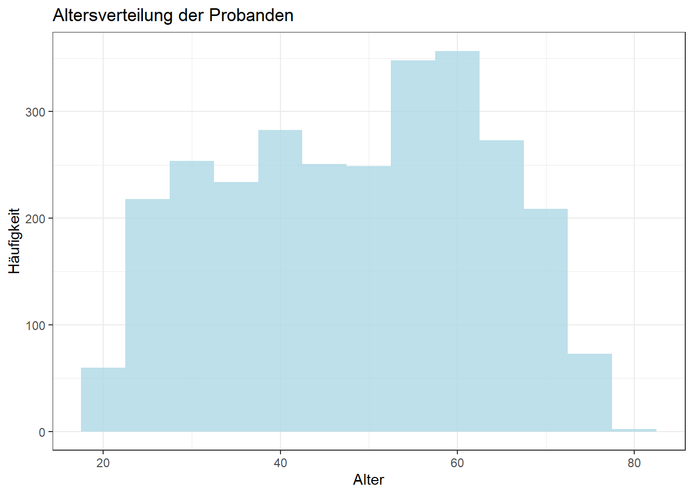

In Kapitel 1 haben wir schon gesehen, dass Umfragedaten aus vielen unterschiedlichen Spalten bestehen: Manche Spalten sind Zahlen, andere sind Kategorien wie „männlich/weiblich/divers“, wieder andere enthalten Freitext. Das ist nicht nur „Kosmetik“ – der Variablentyp entscheidet ganz praktisch darüber,
welche Kennzahlen sinnvoll sind (Mittelwert? Median? Anteil?),
welche Visualisierung passt (Histogramm? Balkendiagramm? Boxplot?),
und worauf ihr bei der Interpretation achten müsst (z. B. Codes, Ausreißer, fehlende Werte).
Lasst uns deshalb Ordnung in die Spalten bringen: Welche Arten von Variablen gibt es – und woran erkennt ihr sie in R?
HinweisLernziele in diesem Abschnitt
Ihr könnt die wichtigsten Variablentypen unterscheiden (numerisch, kategorial, ordinal, qualitativ).
Ihr könnt in R schnell prüfen, welche Werte in einer Variable vorkommen.
Ihr versteht den Unterschied zwischen Bedeutung einer Variable (Messniveau) und dem Datentyp in R (dbl, int, chr, …).
Ihr wisst, welche typischen Probleme je Typ auftreten (NA, Ausreißer, Kodierungen).
2.1 Ein Schema zur Orientierung
Um Variablen sauber abzugrenzen, hilft ein einfaches Schema. Laut Huntington-Klein (2026) unterscheiden wir in der empirischen Forschung zwischen:
Kontinuierlichen Variablen
Zählvariablen
Ordinalen Variablen
Kategorialen Variablen
Qualitativen Variablen
Für die Praxis ist außerdem eine „Zusammenfassungsebene“ nützlich:
Numerisch: kontinuierlich + Zählvariablen
Kategorial: nominal + ordinal
Abbildung 2.1: Arten von Variablen und typische verwendete Datentypen in R.
Wichtig: Diese Einteilung beschreibt das Messniveau (also: was wird gemessen?). Der Datentyp in R (<dbl>, <int>, <chr>, …) ist ein Hinweis, aber nicht die ganze Wahrheit. In Umfragen werden Kategorien z. B. oft als Zahlen kodiert (1, 2, 3 …) oder als viele 0/1‑Spalten (Mehrfachauswahl). Ohne Codebuch/Data Dictionary kann man das leicht falsch lesen.
Schauen wir uns jetzt die Typen nacheinander an – jeweils mit Beispielen aus unserem Datensatz.
2.2 Numerische Variablen
Numerische (quantitative) Variablen messen eine Menge oder Größe. Hier sind Kennzahlen wie Mittelwert, Median oder Standardabweichung oft sinnvoll – aber nur, wenn die Daten plausibel sind und ihr Ausreißer/fehlende Werte berücksichtigt.
Kontinuierliche Variablen
Continuous variables are variables that could take any value (perhaps within some range). (Huntington-Klein 2026)
Im Umfragedatensatz fragt eine Frage nach der Eingabe eines Preises, den die Teilnehmenden bereit wären, für einen Liter Milch einer vorgegebenen Marke zu bezahlen:
“Geben Sie für die 3 Marken bitte den Preis an, den Sie für angemessen halten und bei dem Sie zugreifen würden! Als Dezimaltrennzeichen verwenden Sie bitte das Komma.”
Schauen wir auf ein paar Beobachtungen. Wie sehen die Antworten aus?
survey |>select(u013pzahl_1weihen)
# A tibble: 2,811 × 1
u013pzahl_1weihen
<dbl>
1 1.49
2 NA
3 NA
4 NA
5 NA
6 NA
7 NA
8 NA
9 150
10 NA
# ℹ 2,801 more rows
Anhand der Ausgabe erkennt ihr typischerweise drei Dinge:
Der Datentyp ist <dbl> (double). Das passt zu Dezimalzahlen und ist daher typisch für kontinuierliche Variablen.
Viele Werte sind NA – es fehlen also Angaben. Später müssen wir klären, warum Werte fehlen und wie wir damit umgehen.
Manchmal seht ihr sehr ungewöhnliche Werte (z. B. 150 €). Das sind oft Ausreißer – z. B. durch Tippfehler.
Fehlende Werte („NA“) kurz behandeln
Für einen ersten Überblick können wir fehlende Werte herausfiltern (auch wenn das nicht immer die richtige Entscheidung für eine echte Analyse ist). Das geht mit drop_na():
Jetzt sehen wir mehr „echte“ Preise. Für kontinuierliche Variablen ist typisch: Es gibt keine feste Liste an Ausprägungen, sondern (theoretisch) unendlich viele Werte auf einem Kontinuum. Das merkt ihr auch daran, dass distinct() bei solchen Variablen schnell sehr viele unterschiedliche Werte liefern kann:
Zwar sieht es hier so aus, als wären die eindeutigen Werte mit 48 gar nicht so zahlreich. Trotzdem ist klar: theoretisch könnten viel mehr unterschiedliche Preise eingegeben werden – und „Preis“ ist von Natur aus eine numerische Größe.
Ausreißer, Mittelwert und Median
Bei kontinuierlichen Variablen spielt häufig das Problem der Ausreißer eine Rolle. Gerade in Umfragen ist ein Tippfehler eine naheliegende Ursache. Je nach Ursprung sind unterschiedliche Maßnahmen möglich: Tippfehler sollten wir korrigieren – oder (wenn wir nicht sicher korrigieren können) pragmatisch filtern.
Starten wir mit dem Durchschnittspreis als arithmetischem Mittel:
Warum steht dort NA? Weil R nicht „raten“ will, wie NA in Berechnungen behandelt werden soll. Sobald ein NA in die Rechnung eingeht, wird das Ergebnis NA. Für einen ersten Blick entfernen wir also die fehlenden Werte:
drop_na() entfernt alle Zeilen mit fehlenden Werten. Wenn ihr Spalten angebt, bezieht sich das Entfernen nur auf diese Spalten.
# A tibble: 1 × 1
avg_price
<dbl>
1 4.58
Im Durchschnitt halten die Probanden also einen Preis von 4,58 € für einen Liter Milch für gerechtfertigt. Klingt das plausibel? Prüfen wir das mit einer robusteren Kenngröße: dem Median.
Was also tun? Da wir nicht sicher wissen, welche Eingabe „eigentlich gemeint“ war, entscheiden wir uns hier pragmatisch für ein Filtern unplausibler Werte. Schauen wir zuerst, welche extrem hohen Werte vorkommen:
Durch die Pipeline werden die Filter nacheinander angewendet: zuerst „zu groß“, danach „zu klein“. Danach berechnen wir erneut den Mittelwert.
HinweisFiltern von Daten
Die Funktion filter() ist zentral für die Auswahl der richtigen Beobachtungen. Eine Einführung, wie man mit R und dem dplyr‑Paket Daten filtert, findet ihr in Kapitel 10.
Ausreißer sehen: Boxplot und Histogramm
Visualisierungen helfen, Ausreißer schnell zu erkennen. Ein Boxplot stellt Ausreißer als Punkte außerhalb der Box dar:
Man erkennt hier sehr schön die Handvoll Ausreißer. Die Box selbst ist dadurch kaum sichtbar. Was tun? Bei einem Boxplot solltet ihr nicht einfach filtern, „nur damit es schöner aussieht“, weil der Boxplot Kennzahlen wie den Median und Quartile aus den gefilterten Daten berechnen würde – und ihr damit den Plot inhaltlich verändert.
Die Lösung: Reinzoomen statt filtern. Wir begrenzen nur die Achsenansicht:
Auch hier „ziehen“ Ausreißer die Skala auseinander. Beim Histogramm dürft ihr für die Darstellung pragmatisch filtern, weil es nur Häufigkeiten pro Klasse zählt:
Für jetzt merken wir uns: Kontinuierliche Variablen sind oft <dbl>, können viele Ausprägungen haben und sind empfindlich gegenüber Ausreißern. Boxplot/Histogramm geben euch schnell ein Gefühl für die Verteilung.
Zählvariablen
Count variables are those that, well, count something. Perhaps how many times something happened or how many of something there are. (Huntington-Klein 2026)
Der Unterschied zur kontinuierlichen Variable ist (ganz pragmatisch): Zählvariablen haben keine Nachkommastellen. Typische Beispiele:
Alter (in Jahren)
Anzahl Käufe pro Monat
Anzahl verkaufter Produkte
Zählvariablen können sehr viele Ausprägungen haben und werden dann in der explorativen Analyse oft ähnlich behandelt wie kontinuierliche Variablen. Trotzdem ist das Messniveau ein anderes: Es sind diskrete, abzählbare Werte.
Beispiel: Alter aus dem Geburtsjahr ableiten
Das Alter wurde nicht direkt gefragt, steckt aber indirekt in der Frage: „In welchem Jahr sind Sie geboren?“.
Es sind mit 61 sogar noch mehr Ausprägungen als beim Preis. Ein Histogramm mit 5‑Jahres‑Klassen gibt schnell einen Überblick:
survey |>transmute(age =2025- q002geburt) |>ggplot() +aes(x = age) +geom_histogram(binwidth =5, fill ="lightblue", alpha =0.8) +labs(y ="Häufigkeit", x ="Alter", title ="Altersverteilung der Probanden") +theme_bw()

Hier steckt nebenbei ein wichtiger Punkt: Auch in der explorativen Analyse lohnt es sich manchmal, Visualisierungen kurz lesbarer zu machen (Beschriftungen, Theme, Farben).
HinweisVisualisierungen polieren
Während wir in der explorativen Datenanalyse Wert auf schnelle Ergebnisse legen, wollen wir für Publikationen ansprechende Visualisierungen im Hochglanzformat erstellen. In Kapitel 12 schauen wir explizit auf die Möglichkeiten, Visualisierungen aufzupolieren.
Ganze Zahlen (int)
Zählvariablen bestehen aus ganzen Zahlen (mathematisch: natürlichen Zahlen). In R gibt es dafür den Datentyp int, der in Abbildung 2.1 auch für Zählvariablen angegeben ist.
In der Praxis macht es oft keinen großen Unterschied, ob ihr eine Zählvariable als double oder int speichert. Zwei Vorteile von int sind:
int benötigt weniger Speicher (bei sehr großen Daten relevant).
Es signalisiert klar: „Hier sind nur ganze Zahlen sinnvoll“ – das hilft auch anderen, die den Datensatz später nutzen.
Wandeln wir das Alter in int um und speichern es als neue Variable im Tibble:
Mit mutate() erzeugen wir eine neue Spalte. as.integer() klappt nur, wenn der Wert als ganze Zahl darstellbar ist; sonst gibt es einen Fehler. Mit .after steuern wir die Position der neuen Variable.
Es gibt ein nützliches Paket namens skimr, das unter anderem die Funktion skim() bereitstellt. Sie gibt euch einen schnellen Überblick über einzelne Variablen oder sogar den gesamten Datensatz.
Den letzten Schritt as_tibble() benötigt ihr nicht – er ist nur notwendig, damit in diesem Buch eine Konsolenausgabe entsteht. In RStudio wird die Ausgabe automatisch passend dargestellt.
skim() erzeugt einen Tibble mit Kennzahlen zur Variable Q002age, z. B.:
Datentyp (skim_type)
Anzahl fehlender Werte (n_missing) und Füllgrad (complete_rate)
Kategoriale Variablen ordnen Beobachtungen in Kategorien ein. Oft sind sie in Umfragen sogar der häufigste Typ.
Nominale Variablen
Categorical variables are variables recording which category an observation is in - simple enough! The color of a flower is an example of a categorical variable. Is the flower white, orange, or red? None of those options is “more” than the others; they’re just different. (Huntington-Klein 2026)
Nominale Variablen haben Kategorien ohne natürliche Reihenfolge. Typische Beispiele in Umfragen sind Geschlecht, Bundesland oder „Hauptverantwortlich für den Einkauf: ja/nein“.
In R wollt ihr bei nominalen Variablen meist wissen:
Welche Kategorien kommen vor?
Wie häufig sind sie?
Das geht schnell mit distinct() oder (noch praktischer) count():
survey |>count(q004geschlecht)
# A tibble: 3 × 2
q004geschlecht n
<dbl> <int>
1 1 1328
2 2 1481
3 3 2
Viele nominale Variablen sind als Zahlen kodiert (z. B. 1/2/3). Ohne Codebuch wisst ihr dann noch nicht, welche Zahl für welche Kategorie steht – ihr könnt aber trotzdem schon prüfen, ob es „unerwartete“ Codes gibt.
Ordinale Variablen
Ordinal variables are variables where some values are “more” and others are “less,” but there’s not necessarily a rule as to how much more “more” is. (Huntington-Klein 2026)
Ordinale Variablen haben eine Reihenfolge (z. B. Zustimmung von 1 bis 7), aber die Abstände zwischen den Stufen sind nicht zwingend gleich groß. Das ist wichtig für die Auswertung: Häufig sind Median und Häufigkeiten sinnvoller als ein Mittelwert, und Visualisierungen sind oft Balkendiagramme.
In unserem Datensatz tauchen solche Skalenfragen z. B. in Variablen mit „…diff7…“ im Namen auf. Ein schneller Check:
Wenn ihr ordinale Variablen später modellieren oder sauber visualisieren wollt, ist es oft sinnvoll, sie als ordered factor zu behandeln (statt als „normale“ Zahl). Das machen wir an anderer Stelle im Buch noch ausführlicher.
Sonderfall: Mehrfachauswahl als viele 0/1‑Spalten
In Umfragen werden Mehrfachauswahl‑Fragen häufig als mehrere Dummy‑Spalten gespeichert (0/1). Inhaltlich sind das kategoriale Informationen – gespeichert als Zahlen.
Zum Beispiel gibt es im Datensatz mehrere Spalten, die mit v008ort_ beginnen (Einkaufsorte). Ein erster Blick auf ein paar davon:
Die Interpretation ist hier: „Hat Person X diese Option gewählt – ja/nein?“.
2.4 Qualitative Variablen
Qualitative variables are a sort of catch-all category for everything else. They aren’t numeric in nature, but also they’re not categorical. The text of a Washington Post headline is an example of a qualitative variable. (Huntington-Klein 2026)
Qualitative Variablen sind häufig Freitext: Antworten, die nicht in eine feste Kategorienliste passen. In Umfragen sind das oft „Other“-Felder. In unserem Datensatz findet ihr solche Spalten z. B. an Namen wie …_other:
Für qualitative Variablen ist in der explorativen Analyse oft ein sinnvoller Start:
zuerst die häufigsten Texte anschauen,
Tippfehler/Varianten vereinheitlichen,
und dann entscheiden, ob man Kategorien daraus macht oder Textanalyse einsetzt.
2.5 Zusammenfassung: Welcher Typ → welche Werkzeuge?
Kontinuierlich (dbl): NA/Ausreißer prüfen, Histogramm/Boxplot, Median als robuste Ergänzung.
Zählvariable (diskret, oft int): Häufig wie kontinuierlich auswerten, aber „ganzzahlig“ im Kopf behalten.
Nominal (Kategorien): count()/Balkenplot, Kodierungen über Codebuch prüfen.
Ordinal (geordnete Kategorien): Häufigkeiten + Median; vorsichtig mit Mittelwert/Standardabweichung.
Qualitativ (Text): erst sichten/aufräumen, dann strukturieren.
Huntington-Klein, Nick. 2026. The effect: an introduction to research design and causality. Second edition. A Chapman & HallBook. Boca Raton London New York: CRC Press.